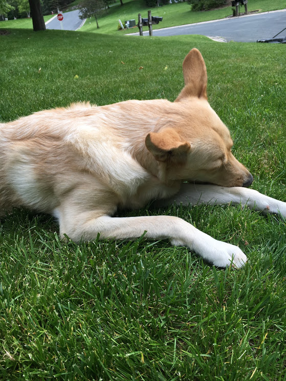
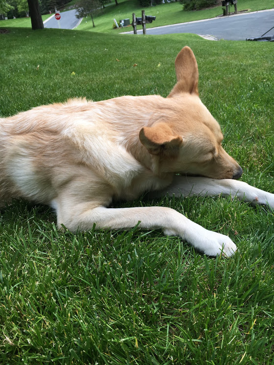

My hobbies include playing baseball and basketball, school and classes, and exploring new places. I work very hard at school, and hope to maintain all A's for this whole school year. I also love animals, and I like to go on hikes and look around for cool animals in my free time. For more information regarding my sports, visit the "Sports" page. For more information about visiting new places and my amazing vacations, visit the "Vacations" page.
As said on my home page, my name is Cam H, and I am 14 years old and I am in 8th grade. I moved here to Minnesota in second grade. Before I moved here, I lived in Portland, Oregon. My entire family lives there and I still go back 3 times per year. My family includes my mom, my dad, my brother Kieran, my dog Anju, and my cat Harley. I love to play with my dog in my yard whenever I can, I will include a picture of her below. I like it here in Minnesota, and I'm excited to go to high school. The picture below is one that I took of Mount Hood in Oregon.

 
